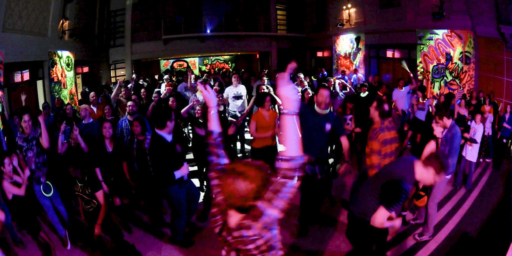

Eurodance is een muziekstroming die begin jaren 90 van de vorige eeuw zijn intrede deed. Het wordt vandag de dag al snel in het hokje van de foute muziek gestopt. Voor mij is dat te kort door de bocht. Fout geeft zo'n negatieve smaak in de mond. De muziek geeft mij juist een goed gevoel. Het stamt uit mijn tienerjaren toen ik mijn smaak ben gaan ontwikkelen. Via deze website breng ik een ode aan het genre Eurodance.
